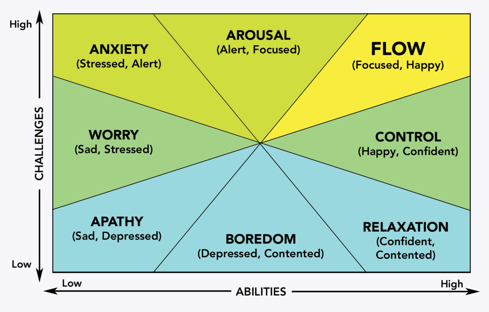

Perhaps, (without special foods or drinks)..you have some experience of feeling very focused, or highly intuitive, or that you feel incredibly alive in the moment...there are many variations, and each of us may have a different sense of it.
Many call it being "in-the-zone", others "see the matrix" or feel like they are "at one"
It is a skill that can be trained, and it may be accessed through many different activities - sports, meditation, performing, coding - to name but a few
Researchers have found that a 4% move out of your comfort zone is optimal to help drop into flow - on a sustainable basis... depending on how risk averse the person is
Here is a link to one of many good videos about flow
Back to top